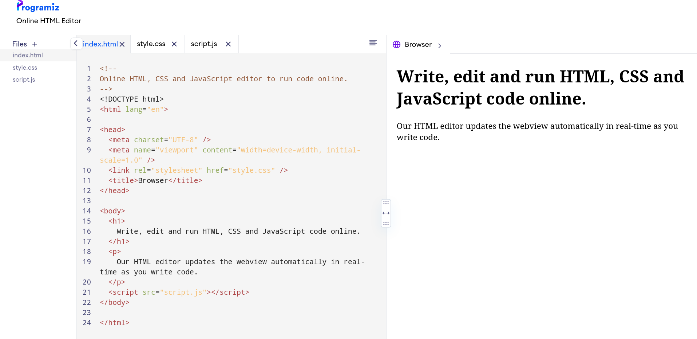
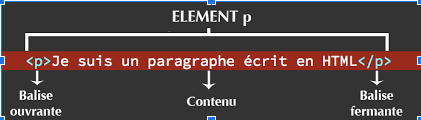

Création d'un pokedex
L'environnement de Travail
On va utiliser Programmiz afin de faire notre site web.

Tout à gauche on retrouve nos fichiers :
- index.html : le fichier ouvert actuellement => Tous le contenu du site
- index.css : le fichier de style (couleurs, bordures...)
- index.js : les intéractions
Cliquer pour ouvrir les fichiers index.css et index.js
Question1) Que contient le fichier index.js ?
Nous rentrerons plus en détails sur les fichiers ccs et js par la suite, pour le moment revenons sur le fichier index.html.
Le contenu html est à gauche, il s'agit de balises, et le rendu de la page.
Le développeur créé sa page en HTML (à gauche), et les utilisateur voit le rendu à droite.
Exercice : Changer le contenu de en noir pour voir les modifications à droite.
Question 2 : Que-ce-qui change dans la page quand vous remplacez le texte Browser par Mario ?
Vous pouvez maintenant supprimer tout le code existant, c'est à notre tour d'écrire.
Premières balises
Copier coller (clique droit "copier", puis dans programiz -> clique droit coller") la ligne suivante :
<h1>
Pokedex
</h1>
h1 est une balise, cela correspond à un titre :

Ecrire en dessous du titre :
dresseur : nom_d_equipe
Ajouter maitenant la balise b : elle permet de mettre en gras du texte.
Le debut de la balise <b> se place devant le texte ciblé, et on ferme la balise avec un / : <b> placé devant le texte.
Exercice : Rendre le texte Dresseur en gras :
<b>Dresseur:</b>
Le saut de ligne, une balise orpheline
Balises imbriquées
Ajout d'images
Pensez à télécharger votre travail
Pour cela clqiuez sur la fleche tout en bas à gauche.